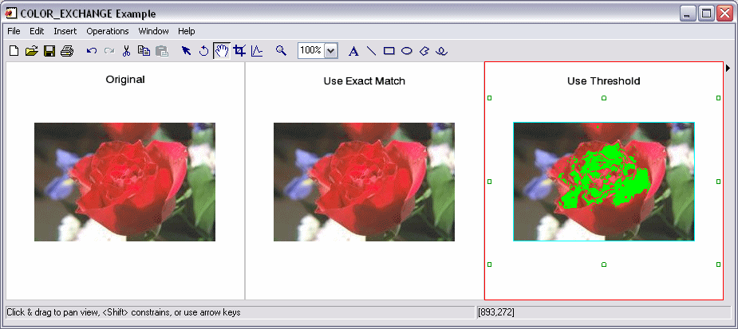

The COLOR_EXCHANGE procedure replaces image pixels of a given color with pixels of a new color. For multi-channel images, every image color channel must match the specified color in order for replacement to occur. Specify a threshold value to replace colors close to the specified color.
Result = COLOR_EXCHANGE( Image , Color , ReplaceColor [, THRESHOLD = vector ])
Result is an array of the same dimensions and type as Image .
A 2D or 3D array of any basic type containing the input image. 2D arrays are treated as one-channel images. 3D arrays must be of the form [ N x n x m ] where N is the number of image channels.
An N -element vector that specifies the color in the image that is to be replaced, where N is the number of image channels.
An N -element vector that specifies the color to be placed in the image where the image color matches the Color argument, and where N is the number of image channels.
An N -element vector that specifies the threshold of the color in the array to be replaced, where N is the number of image channels. Colors are replaced if every channel is in the range Color +/- Threshold , inclusive. The default value is a vector of zeroes, specifying that an exact match is needed for replacement.
If a threshold is specified, THRESHOLD promotes the datatype of the threshold value to ensure the comparisons do not overflow.
This example reads a TrueColor image file and displays the original and two versions to which a color exchange operation has been applied.
; Read a TrueColor image:
file = FILEPATH('rose.jpg', SUBDIRECTORY = ['examples', 'data'])
IOPEN, file, rose1
; Replace all of the image's pure red pixels with green pixels:
rose2 = COLOR_EXCHANGE(rose1, [255,0,0], [0,255,0])
; Replace all of the pixels within a threshold of 60 from the pure
; red pixel with green pixels:
rose3 = COLOR_EXCHANGE(rose1, [255,0,0], [0,255,0], $
THRESHOLD=[60,60,60])
IIMAGE, rose1, VIEW_GRID=[3,1], VIEW_TITLE='Original', $
DIMENSIONS=[900,300], WINDOW_TITLE='COLOR_EXCHANGE Example', $
/NO_SAVEPROMPT
IIMAGE, rose2, /VIEW_NEXT, VIEW_TITLE='Exchange Pure Red'
IIMAGE, rose3, /VIEW_NEXT, VIEW_TITLE='Use Threshold'
; Increase the text size
ISETPROPERTY, 'text*', FONT_SIZE=40
The resulting images appear as follows:
|
 |
Note: In the first replacement (the center image), there were no exact matches for the pixel value [255,0,0] , so no pixels were replaced.
|
6.4 |
Introduced |